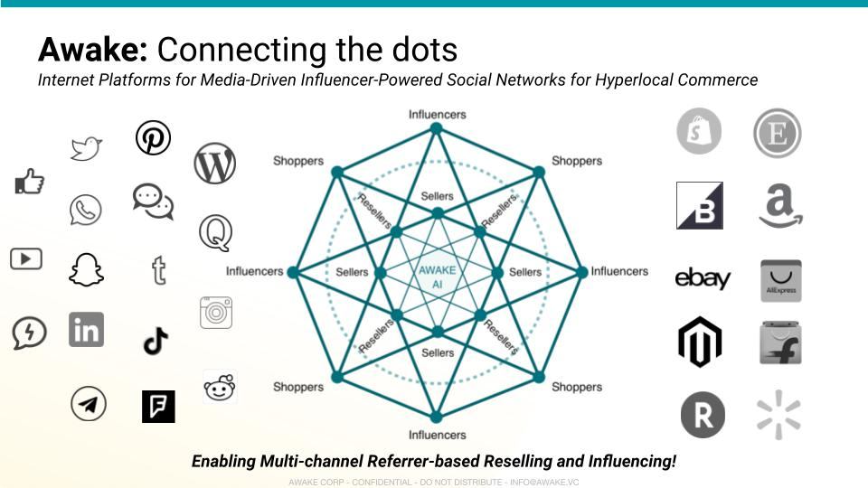
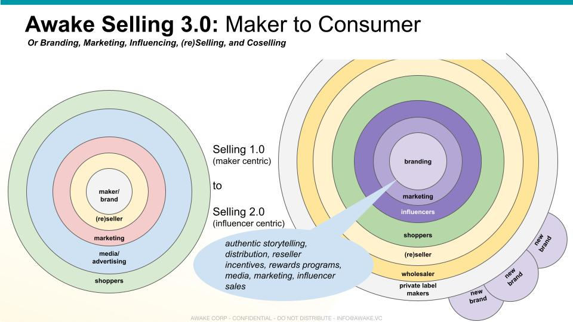
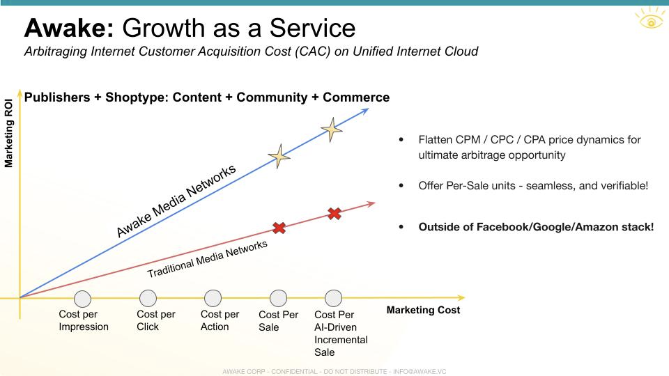

Retail 3.0
Retail 3.0
Awake started in retail because the MetaWeb can provide an immediate monetization solution for so many Internet users (Identity) and to Business of all types struggling online today. What is the future of retail? How does Awake design protocols to support this new world?
Modern Market Networks
A few key design insights as the world moves from stores to malls to actual social commerce via market networks (Market Network):
Media Reliably Drives Commerce
This one is fairly obvious as we are bombarded with advertisements and aspirational messages through product placement and so on. If no one knows of your product, they won’t be buying it.
On the Internet, all forms of media are incredibly cheap to create and thus the content explosion over the past few decades, which will now accelerate at a pace unseen before as billions of more people join the global Internet economy. Content drives engagement and community which then reliably drives commerce.
And remember the keystone: all digital content online is HTTP content.
Influencers Drive Online / Offline Commerce
Whether we like marketers or not, it is a fact that Internet influencers play a role driving sales online. In the Internet 3.0 economy, content is king again, and influencers are high priests of content-driven commerce, driving incremental orders to both online and offline retailers and brands.
Buyers Not Sellers
Instead of taking a sell side view of the world, where sellers are attempting to close leads and targets, why not see the world as it is: purchases happen when buyers decide they're ready.
Direct To Consumer = Community Commerce
So to build a brand and create a DTC business is as simple as creating a platform for the extended community and including sellers as members. A Market automatically emerges in the midst of Communities when all the necessary conditions are met. This includes ease of doing transactions and a mechanism to share Value with all contributing members using fair and transparent Attribution.
AI Directly Connects Buyers to Sellers
Algorithms can help match buyers and sellers and the best AI assist human beings to deliver better and more personalized service.
Verticals = UI
Different industries are mainly different only in terms of data fields (looking at it abstractly) which means the user experience is dependent on what is being bought / sold.
Hyperlocal = Offline 2.0
The notion of offline commerce is really digital with geographical filters.
Offline = Digital = Online
And viewed through this digital lens offline and online are both digital first and all else later and can be managed uniformly.
Offline = Channel
Which of course implies that offline is a channel to online businesses.
Amazon = Etsy = Flipkart = Channels
And every single Internet platform is also a channel to a native omni-channel digital brand.
Connecting The Dots
And now that we have understood the key imperatives of a Market network operating system, we can think about the types of Connections within the Network .
In particular, as we have discussed before, ultimately business is all about interconnecting everyone to everything. Seeing that buying and selling is fundamental to life enables the right type of marketing automation by empowering human Connections.

Brands 3.0
The brands of the future are the ones that respect Nature and display Spirituality not in some grandiose way to signal virtue but through action that is evident to everyone across trusted networks.
In fact, communities and networks are brands, other than shared values and shared consciousness, there is nothing that can be pointed to as goodwill or brand equity. So to create large and large amounts of brand equity and goodwill, one will need to demonstrably be good and be equitable.
Commerce powered by Communities is the way for brands to become movements and the only way for businesses to be on top of mind with their market participants.
Selling 3.0
The basics are flipped in the new world of Internet 3.0. It used to be that sellers dominated and customers could have any color they wanted as long as it was black. Things have changed!
On the new Internet, sellers do not matter, what matters are the reasons to buy this versus that.
Businesses that do not support relevant Communities will get nowhere because the new world is not brand-first but purpose-first. And purposeful communities are powerful movements that can lift all boats.

CAC
Internet businesses are a game of Customer Acquisition Cost (CAC) vs profit and a competition between rival businesses that are fighting for the same customers.

CAC numbers on the Internet are going up because Internet advertising is a very inefficient way of doing anything and everyone is going digital, particularly after 2019.
Awake is an alternate economy on top of the underlying Internet, and is able to drive incremental sales in a whole new way across global coseller networks powered by creators and communities.